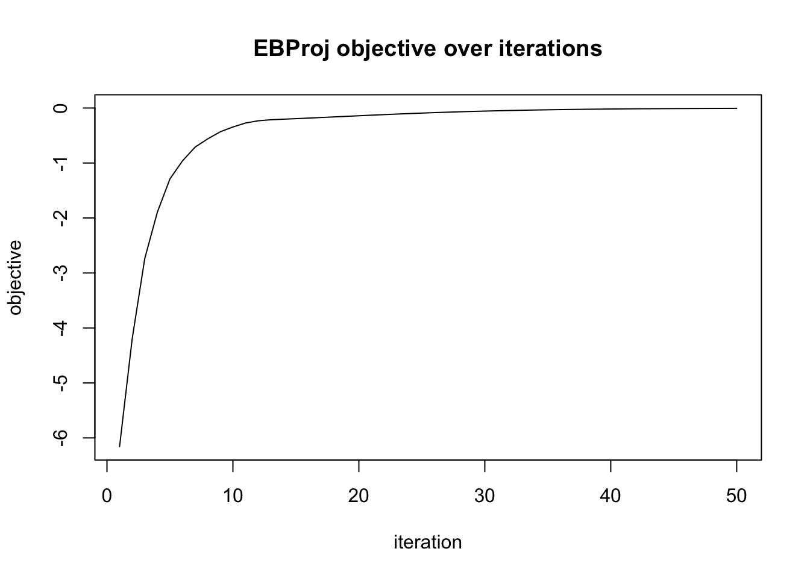
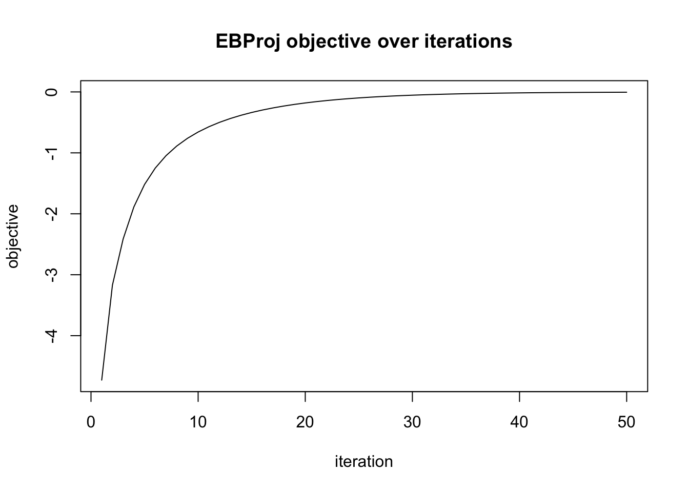
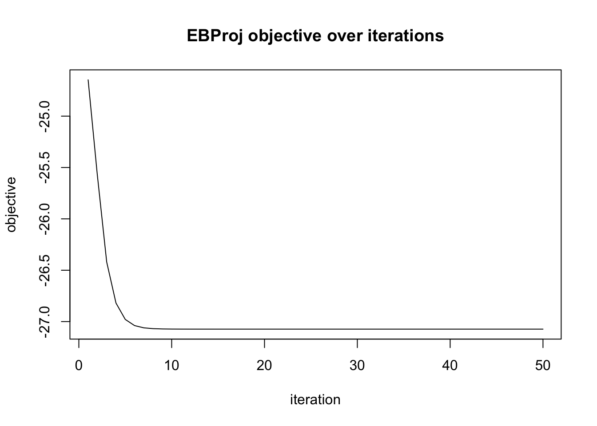
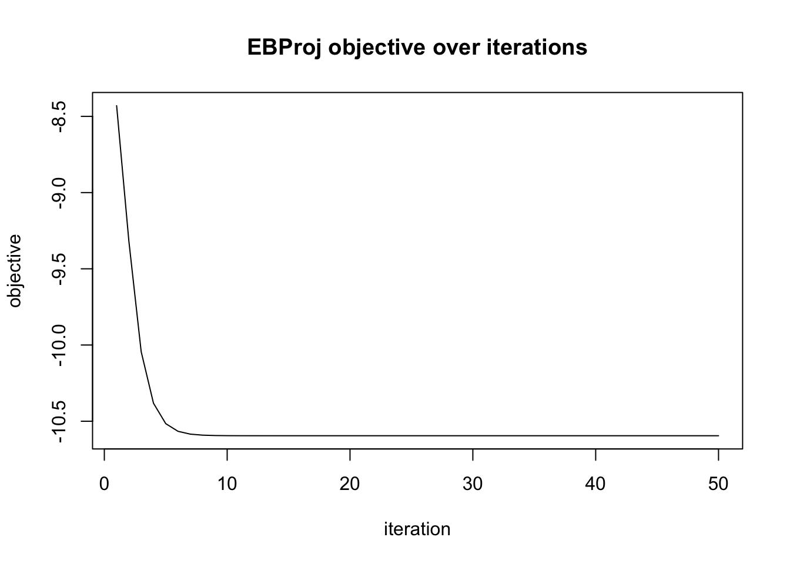
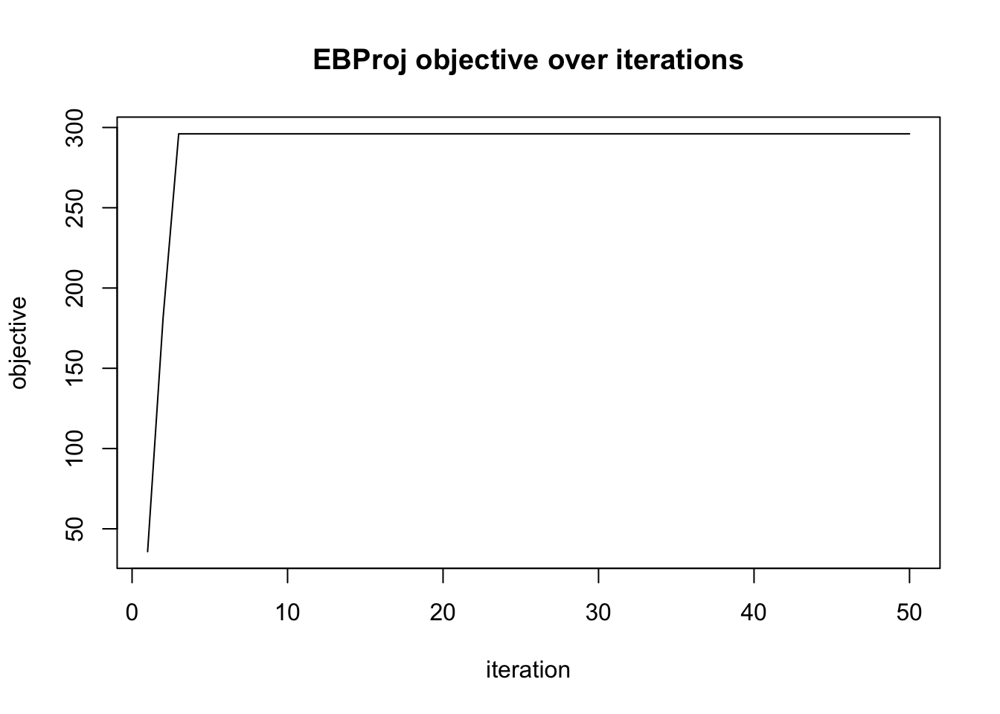
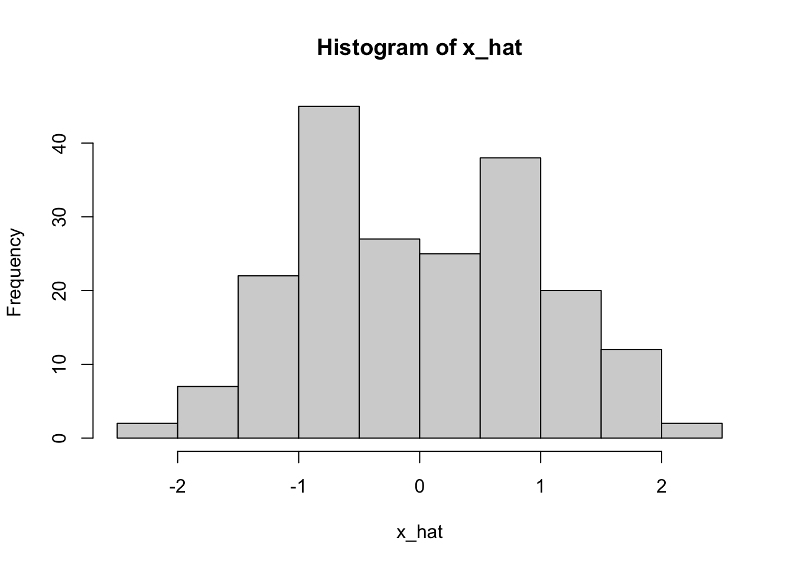

This reproducible R Markdown
analysis was created with workflowr (version
1.7.2). The Checks tab describes the reproducibility checks
that were applied when the results were created. The Past
versions tab lists the development history.
Great job! The global environment was empty. Objects defined in the
global environment can affect the analysis in your R Markdown file in
unknown ways. For reproduciblity it’s best to always run the code in an
empty environment.
The command set.seed(1) was run prior to running the
code in the R Markdown file. Setting a seed ensures that any results
that rely on randomness, e.g. subsampling or permutations, are
reproducible.
Great! You are using Git for version control. Tracking code development
and connecting the code version to the results is critical for
reproducibility.
The results in this page were generated with repository version
c0dbcdf.
See the Past versions tab to see a history of the changes made
to the R Markdown and HTML files.
Note that you need to be careful to ensure that all relevant files for
the analysis have been committed to Git prior to generating the results
(you can use wflow_publish or
wflow_git_commit). workflowr only checks the R Markdown
file, but you know if there are other scripts or data files that it
depends on. Below is the status of the Git repository when the results
were generated:
Note that any generated files, e.g. HTML, png, CSS, etc., are not
included in this status report because it is ok for generated content to
have uncommitted changes.
These are the previous versions of the repository in which changes were
made to the R Markdown (analysis/fastica_asymmetric_03.Rmd)
and HTML (docs/fastica_asymmetric_03.html) files. If you’ve
configured a remote Git repository (see ?wflow_git_remote),
click on the hyperlinks in the table below to view the files as they
were in that past version.
After two “quick and dirty” attempts, I think I’m now ready to
implement a proper version of an asymmetric version of fastica. We can
also think of this as a Newton-based method for optimizing the Empirical
Bayes Projection model (EBProj).
The Newton version of EBCD
Given a psd matrix \(S=UDU'\)
and a residual variance \(\sigma^2\),
define the objective function \(J\) as:
\[J(w, g; \sigma^2, S) = \sum_{i=1}^n \log
Z((UDw)_i, g, \sigma^2)\] where \[Z(x,
g, \sigma^2) = \int g(\theta) \exp\left( \frac{2x \theta -
\theta^2}{2\sigma^2} \right) d\theta. \] The EBCD method (for
fixed \(\sigma^2\)) can be implemented
by maximizing \(J\) subject to \(w'Dw=1\) using a Newton method on \(w\) (and, for example, EM method for \(g\)). Given the optimal \(w,g\), the optimal \(q\) is the EBNM posterior with prior \(g^*\) and data \(x=UDw^*,s=\sigma\).
For \(g\) a binary prior with
probabilities \(1-p,p\) on \(y_0,y_1\) we have \[Z(x, g, \sigma^2) = (1-p)\exp\!\left(\frac{2xy_0
- y_0^2}{2\sigma^2}\right) + p\exp\!\left(\frac{2xy_1 -
y_1^2}{2\sigma^2}\right).\]
Define the log unnormalized weights \(\ell_j(x) = \log p_j + (2xy_j -
y_j^2)/(2\sigma^2)\), with \(p_0=1-p\) and \(p_1=p\). Then the posterior probability of
\(y_1\) is \[\pi_1(x) = \frac{e^{\ell_1(x)}}{e^{\ell_0(x)} +
e^{\ell_1(x)}},\] the posterior mean is \[M(x;\sigma^2,g) = (1-\pi_1)y_0 + \pi_1
y_1,\] and the derivative of \(M\) with respect to \(x\) (used in the Newton step) is \[M'(x;\sigma^2,g) =
\pi_1(1-\pi_1)(y_1-y_0)^2/\sigma^2.\]
The EBProj approach
The EBProj method works on a projection matrix \(P\) (if \(S\) is a whitened then \(P=S/n\) is a projection matrix). The
objective is: \[F_{\text{EBproj}}(w, g; \tau,
P)
= \frac{n - k - 2b}{2} \left( \log \tau - \tau + 1 \right) + J(w,g;
\sigma^2_\text{eff}, S = nP)\] where \(\sigma^2_\text{eff} =\frac{n}{(n - k -
2b)\tau}\).
Optimizing the EBProj objective can iterate between optimizing \(J\) over \(w,g\) as above and then optimizing \(\tau = 1/(1-\hat\rho)\) where \(\hat\rho = \bar{\mathbf{v}}'P\bar{\mathbf{v}}
/ U_q\), \(U_q =
E_q[\mathbf{v}'\mathbf{v}]\) is the second moment, and \(P=S/n\).
Define a fit object (simply a list) that contains the data \(U\), and the parameters to be updated
(prior \(g\), weights \(w\)). Subsequent update functions will take
a fit as input and output a new fit.
ebproj_init = function(U, b=0, tau=1) {
k = ncol(U)
n = nrow(U)
d = rep(n, k) # So that S=UDU'= nUU' = nP
w = rnorm(k)
w = w / sqrt(sum(d * w^2)) # normalise to w'Dw = 1
fit = list(
U = U,
d = d,
b = b,
w = w,
c = 1, # scale factor; effective atoms are c*y_0, c*y_1
y_0 = -1,
y_1 = 1,
p = 0.5,
objective = NULL,
tau = tau
)
return(fit)
}
This function initializes using a fastica strategy. It runs fastica
to get \(w\) (by setting \(\sigma^2=c\)) and then initializes \(c\) to mean(x tanh(x)) where
\(x=UDw\) are the pseudo-data
(pre-shrunken source values).
#initializes by first running fastICA (with c=sigma^2) to get w, and then
ebproj_init_fastica = function(U,b=0){
fit = ebproj_init(U,b)
n = nrow(fit$U)
k = ncol(fit$U)
nu = n - k - 2*fit$b
sigma2 = n / (nu * fit$tau)
fit$c = sigma2
fit = ebproj_fit(fit,fix_g=TRUE, fix_tau= TRUE)
x = ebproj_calc_x(fit)
fit$c = mean(x * tanh(x))
fit$tau = n/(fit$c * nu) # so that sigma2 = fit$c
return(fit)
}
ebproj_calc_x = function(fit){
as.vector(fit$U %*% (fit$d * fit$w))
}
Objective function
ebproj_objective = function(fit) {
n = nrow(fit$U)
k = ncol(fit$U)
nu = n - k - 2*fit$b
sigma2 = n / (nu * fit$tau)
ey0 = fit$c * fit$y_0; ey1 = fit$c * fit$y_1 # effective atoms
x = ebproj_calc_x(fit)
J = sum(log_Z_binary(x, ey0, ey1, fit$p, sigma2))
obj = (nu/2) * (log(fit$tau) - fit$tau + 1) + J
return(obj)
}
The dual objective (eq 200 of the notes) is \(F_{\text{EBproj}}(\mathbf{w}, g; \tau) =
J(\mathbf{w}, g; \sigma^2_\text{eff}) + C(\tau)\). It is
equivalent to the primal at the optimal \(q\) but is easier to compute because it
avoids computing \(\text{KL}(q\|g)\)
explicitly.
The primal objective (eq 190/199) retains the full
variational structure: \[F_{\text{EBproj}}(q,
g; \tau) = \frac{n - k - 2b}{2} \bigl(\log \tau - \tau(1 - \hat\rho) +
1\bigr) - \text{KL}(q \| g)\] where \(\hat\rho =
\bar{\mathbf{v}}'\mathbf{P}\bar{\mathbf{v}} / U_q\), \(\bar{\mathbf{v}} = E_q[\mathbf{v}]\) is the
posterior mean, and \(U_q =
E_q[\mathbf{v}'\mathbf{v}]\) is the second moment. The \(\tau\) update targets this objective, so
after a \(\tau\) step the primal
increases while the dual can decrease.
For the binary prior, \(\text{KL}(q\|g) =
\sum_i \bigl[(1-\pi_{1i})\log\tfrac{1-\pi_{1i}}{1-p} +
\pi_{1i}\log\tfrac{\pi_{1i}}{p}\bigr]\) and \(U_q = \sum_i \bigl[(1-\pi_{1i})(cy_0)^2 +
\pi_{1i}(cy_1)^2\bigr]\).
kl_binary = function(pi1, p) {
pi0 = 1 - pi1
# clamp to avoid log(0)
pi0 = pmax(pi0, 1e-300); pi1 = pmax(pi1, 1e-300)
sum(pi0 * log(pi0 / (1 - p)) + pi1 * log(pi1 / p))
}
ebproj_primal_objective = function(fit) {
n = nrow(fit$U)
k = ncol(fit$U)
nu = n - k - 2*fit$b
sigma2 = n / (nu * fit$tau)
ey0 = fit$c * fit$y_0; ey1 = fit$c * fit$y_1
x = ebproj_calc_x(fit)
pi1 = post_prob1(x, ey0, ey1, fit$p, sigma2)
vbar = post_mean_binary(x, ey0, ey1, fit$p, sigma2)
Uv = as.vector(t(fit$U) %*% vbar)
Uq = sum((1 - pi1) * ey0^2 + pi1 * ey1^2) # E_q[v'v] second moment
# rho_hat = vbar' P vbar / U_q, with P = S/n and S = UDU'
rho = sum(fit$d * Uv^2) / (n * Uq)
kl = kl_binary(pi1, fit$p)
obj = (nu/2) * (log(fit$tau) - fit$tau * (1 - rho) + 1) - kl
return(obj)
}
Prior parameterisation and update modes
The binary prior is parameterised as \((c,
g_0)\) where \(g_0 = (1-p)\delta_{y_0}
+ p\delta_{y_1}\) is a base prior and \(c > 0\) is a scale
factor. The effective prior is \[g =
(1-p)\delta_{cy_0} + p\delta_{cy_1},\] so the effective atoms are
\(cy_0\) and \(cy_1\). This parameterisation is
intentionally over-complete — multiplying \(c\) by any positive constant and dividing
\(y_0, y_1\) by the same constant
leaves \(g\) unchanged — but the
redundancy is useful because it separates “shape” from “scale”.
Three update modes are provided, controlled by fix_g and
fix_g0 in ebproj_fit:
fix_g
fix_g0
behaviour
TRUE
—
freeze \(g\) entirely; no prior
update
FALSE
TRUE
fix base prior \(g_0 = (p, y_0,
y_1)\); optimise scale \(c\)
only
FALSE
FALSE
full EM update of \((p, y_0,
y_1)\); set \(c = 1\)
afterwards
Full update (fix_g0 = FALSE): standard
EM, updating \(p\), \(y_0\), \(y_1\) using the effective atoms as
observations. Because the parameterisation is over-complete we reset
\(c = 1\) after each step (the scale is
absorbed into \(y_0, y_1\)).
Scale-only update (fix_g0 = TRUE):
\(g_0\) is held fixed and \(c\) is found by exact 1-D maximisation of
\(J(w, cg_0)\) over \(c > 0\) (optimising on the log scale).
This is useful when \(g_0\) has been
pre-specified (e.g., from a previous run or a known prior shape) and
only the amplitude needs to be estimated.
Update functions
Each function takes a fit object and returns a fit object.
The Newton update for \(w\) (Section
2.3 of the notes) solves the constrained problem with the approximate
Newton step \[w_{\text{new}} = (\lambda I_k -
\tilde{H})^{-1}(w_\text{target} - \tilde{H}w)\] where \(w_\text{target} = U^T M(x)\) and \(\lambda = \max(w^T D w_\text{target},\, \max_j
\tilde{H}_{jj} + \epsilon)\). Five choices of diagonal
preconditioner \(\tilde{H}\) are
supported (default "ica"):
"ica" (FastICA): \(\tilde{H}_{jj} = c_\text{ica}\) where \(c_\text{ica} = \sum_i M'(x_i)\) — the
isotropic approximation under the uniform-feature-variance assumption
\(S_{ii} \approx k\) (Lemma 2.1).
"none" (\(\tilde{H} = 0\)): recovers the natural
power / gradient step \(w_\text{new} \propto
w_\text{target}\).
ebproj_update_w = function(fit, hessian = "ica", eps = 1e-6) {
n = nrow(fit$U)
k = ncol(fit$U)
nu = n - k - 2*fit$b
sigma2 = n / (nu * fit$tau)
ey0 = fit$c * fit$y_0; ey1 = fit$c * fit$y_1
x = ebproj_calc_x(fit) # UDw, length n
Mx = post_mean_binary(x, ey0, ey1, fit$p, sigma2)
Mpx = post_mean_deriv_binary(x, ey0, ey1, fit$p, sigma2)
w_target = as.vector(t(fit$U) %*% Mx) # U^T M(x), length k
# diagonal of S: S_ii = sum_j U_ij^2 d_j
S_diag = as.vector((fit$U^2) %*% fit$d) # length n
H_diag = switch(hessian,
diag = { c_j = as.vector(t(fit$U^2) %*% Mpx); c_j * fit$d },
trace = { c_t = sum(Mpx * S_diag) / sum(fit$d); c_t * fit$d },
iso = { c_i = sum(Mpx * S_diag) / k; rep(c_i, k) },
ica = { c_c = sum(Mpx); rep(c_c, k) },
none = rep(0, k),
stop("hessian must be one of: 'diag', 'trace', 'iso', 'ica', 'none'")
)
# Lagrange multiplier; ensure lambda > max(H_diag) for positive definiteness
lambda = max(sum(fit$d * fit$w * w_target), max(H_diag) + eps)
w_new = (w_target - H_diag * fit$w) / (lambda - H_diag)
# normalise to w'Dw = 1
scale = sqrt(sum(fit$d * w_new^2))
fit$w = w_new / scale
return(fit)
}
# Full EM update for binary prior: update (p, y_0, y_1), reset c = 1.
# Since (c, y_0, y_1, p) ~ (1, c*y_0, c*y_1, p) the parameterisation is
# over-complete; we absorb c into y_0, y_1 after each full update.
ebproj_update_g = function(fit) {
n = nrow(fit$U)
k = ncol(fit$U)
nu = n - k - 2*fit$b
sigma2 = n / (nu * fit$tau)
ey0 = fit$c * fit$y_0; ey1 = fit$c * fit$y_1
x = ebproj_calc_x(fit)
pi1 = post_prob1(x, ey0, ey1, fit$p, sigma2)
pi0 = 1 - pi1
fit$p = mean(pi1)
fit$y_0 = sum(pi0 * x) / sum(pi0) # effective atom absorbed into y_0
fit$y_1 = sum(pi1 * x) / sum(pi1) # effective atom absorbed into y_1
fit$c = 1 # reset after absorbing scale
return(fit)
}
# Scale-only update: fix the base prior g_0 = (p, y_0, y_1) and optimise c by
# maximising J(w, c*g_0) over c > 0 via 1-D exact optimisation.
ebproj_update_c = function(fit) {
n = nrow(fit$U)
k = ncol(fit$U)
nu = n - k - 2*fit$b
sigma2 = n / (nu * fit$tau)
x = ebproj_calc_x(fit)
obj_c = function(log_c) {
cc = exp(log_c)
sum(log_Z_binary(x, cc * fit$y_0, cc * fit$y_1, fit$p, sigma2))
}
res = optimize(obj_c, c(-5, 5), maximum = TRUE)
fit$c = exp(res$maximum)
return(fit)
}
# update tau using rho = vbar' P vbar / U_q, tau = 1/(1-rho)
ebproj_update_tau = function(fit) {
n = nrow(fit$U)
k = ncol(fit$U)
nu = n - k - 2*fit$b
sigma2 = n / (nu * fit$tau)
ey0 = fit$c * fit$y_0; ey1 = fit$c * fit$y_1
x = ebproj_calc_x(fit)
pi1 = post_prob1(x, ey0, ey1, fit$p, sigma2)
vbar = post_mean_binary(x, ey0, ey1, fit$p, sigma2)
# P = S/n = U D U'/n, so vbar' P vbar = (1/n) (U'vbar)' D (U'vbar)
Uv = as.vector(t(fit$U) %*% vbar)
Uq = sum((1 - pi1) * ey0^2 + pi1 * ey1^2) # E_q[v'v] second moment
rho = sum(fit$d * Uv^2) / (n * Uq)
fit$tau = 1 / (1 - rho)
return(fit)
}
Main fitting loop
# Updates tau, g, w in that order (does the Newton step last. This way if w has a good initial value then the updated tau,g will be good and so the next update of w will use those good tau, g)
# fix_g = TRUE : skip all prior updates (freeze g entirely)
# fix_g = FALSE, fix_g0 = TRUE : update only c (fix base prior g_0)
# fix_g = FALSE, fix_g0 = FALSE : full update of (p, y_0, y_1), reset c = 1
ebproj_fit = function(fit, hessian = "ica",
fix_w = FALSE, fix_g = FALSE, fix_g0 = FALSE, fix_tau = FALSE,
max_iter = 100, tol = 1e-6, verbose = FALSE) {
fit$objective = ebproj_objective(fit)
for (iter in seq_len(max_iter)) {
if (!fix_tau) fit = ebproj_update_tau(fit)
if (!fix_g) {
if (fix_g0) fit = ebproj_update_c(fit) # only scale
else fit = ebproj_update_g(fit) # full (p, y_0, y_1) update
}
if (!fix_w) fit = ebproj_update_w(fit, hessian = hessian)
obj_new = ebproj_objective(fit)
if (verbose)
cat(sprintf("iter %3d obj = %.6f tau = %.4f p = %.4f y0 = %.3f y1 = %.3f\n",
iter, obj_new, fit$tau, fit$p, fit$y_0, fit$y_1))
if (!is.null(fit$objective) && abs(obj_new - fit$objective) < tol) {
fit$objective = obj_new
break
}
fit$objective = obj_new
}
fit$iter = iter
return(fit)
}
Simple test 1a (p=0.5)
Generate data from a single asymmetric binary source with \(p = 0.5\).
set.seed(1)
n = 200; p_dim = 1000; k = 10
# true source: binary with p = 0.5
p_true = 0.5
s_raw = as.numeric(runif(n) < p_true)
s_true = (s_raw - p_true) / sqrt(p_true * (1 - p_true)) # zero-mean, unit-var
# mix into high-dimensional data
a = rnorm(p_dim)
a = a / sqrt(sum(a^2))
X = outer(a, s_true) + matrix(rnorm(p_dim * n, 0, 0.1), p_dim, n)
The data matrix \(X\) is \(p \times n\). To whiten \(X\) we center it and take the first \(k\) right singular vectors (\(U\) is \(n \times
k\)).
Xcenter = X - rowMeans(X)
sv = svd(Xcenter, nu = 0, nv = k)
U = sv$v # n x k
Fit fastica
Now fit the model. I start by using ebproj_init_fastica
to run fastica: it does this by using the ebproj updates,
but setting sigma2=c and updating only w. The
init function then sets sigma2=c=mean(x tanh(x)), at which
point the solution should be stationary at both \(w\) and \(c\). Here I check this by checking that the
solution does not change when I update \(c\) (fix tau and g0):
fit = ebproj_init_fastica(U,b=k/2)
fit = ebproj_fit(fit, max_iter = 200, fix_g = TRUE, fix_tau = TRUE, verbose = TRUE)
iter 1 obj = 3.167410 tau = 1.4684 p = 0.5000 y0 = -1.000 y1 = 1.000
# check recovery: x = UDw gives the n-vector of projections
x_hat = ebproj_calc_x(fit)
cat(sprintf("Correlation with true source: %.4f\n", abs(cor(x_hat, s_true))))
Correlation with true source: 0.9951
Random initialization
Here we randomly initializz and plot objective over iterations to
check convergence. (Note this example appears to be converging to the
null solution, where the objective is 0).
set.seed(2)
fit_verbose = ebproj_init(U, b = 1)
objs = numeric(50)
for (iter in 1:50) {
fit_verbose = ebproj_update_tau(fit_verbose)
fit_verbose = ebproj_update_g(fit_verbose)
fit_verbose = ebproj_update_w(fit_verbose)
objs[iter] = ebproj_objective(fit_verbose)
}
plot(objs, type = "l", xlab = "iteration", ylab = "objective",
main = "EBProj objective over iterations")

This is the same but using a gradient step instead of Newton:
set.seed(2)
fit_verbose = ebproj_init(U, b = 1)
objs = numeric(50)
for (iter in 1:50) {
fit_verbose = ebproj_update_tau(fit_verbose)
fit_verbose = ebproj_update_g(fit_verbose)
fit_verbose = ebproj_update_w(fit_verbose, hessian="none")
objs[iter] = ebproj_objective(fit_verbose)
}
plot(objs, type = "l", xlab = "iteration", ylab = "objective",
main = "EBProj objective over iterations")

Here I note that the tau update is not actually guaranteed to
increase the objective (nor the primal objective). This is because the
tau update is designed to increase O(q,g,tau) for a fixed q,g, but in
the way I am doing things (working with w,g,tau) the q defined by
(w,tau) changes implicitly when tau changes. This is OK: the new tau is
optimizing O(q,g,tau) for the current implicit q
(=q(current_w,current_tau) assumed fixed), and as long as we go on to
update w, it will find (implicitly) the new q that optimizes O(q,g,tau)
this new tau. But the potential for non-monotonic behavior of the
obective (after a tau update, before w update) is something to be aware
of. And we should probably add a warning if the function is called to
update tau with w fixed.
set.seed(2)
fit_verbose = ebproj_init(U, b = 1)
objs = numeric(50)
objs_primal = numeric(50)
for (iter in 1:50) {
fit_verbose = ebproj_update_tau(fit_verbose)
objs[iter] = ebproj_objective(fit_verbose)
objs_primal[iter] = ebproj_primal_objective(fit_verbose)
}
plot(objs, type = "l", xlab = "iteration", ylab = "objective",
main = "EBProj objective over iterations")

plot(objs_primal, type = "l", xlab = "iteration", ylab = "objective",
main = "EBProj objective over iterations")

fastica init
This is the trace of the objective initializing with fastica
# plot objective over iterations to check convergence
set.seed(2)
fit_verbose = ebproj_init_fastica(U, b = 1)
objs = numeric(50)
for (iter in 1:50) {
fit_verbose = ebproj_update_tau(fit_verbose)
fit_verbose = ebproj_update_g(fit_verbose)
fit_verbose = ebproj_update_w(fit_verbose)
objs[iter] = ebproj_objective(fit_verbose)
}
plot(objs, type = "l", xlab = "iteration", ylab = "objective",
main = "EBProj objective over iterations")

Simple test 1b (p=0.1)
Generate data from a single asymmetric binary source with \(p = 0.1\).
set.seed(1)
n = 200; p_dim = 1000; k = 10
# true source: binary with p = 0.1
p_true = 0.1
s_raw = as.numeric(runif(n) < p_true)
s_true = (s_raw - p_true) / sqrt(p_true * (1 - p_true)) # zero-mean, unit-var
# mix into high-dimensional data
a = rnorm(p_dim)
a = a / sqrt(sum(a^2))
X = outer(a, s_true) + matrix(rnorm(p_dim * n, 0, 0.1), p_dim, n)
The data matrix \(X\) is \(p \times n\). To whiten \(X\) we center it and take the first \(k\) right singular vectors (\(U\) is \(n \times
k\)).
Xcenter = X - rowMeans(X)
sv = svd(Xcenter, nu = 0, nv = k)
U = sv$v # n x k
Now fit the model. I initialize at fastica solution (run fastica by
setting sigma2=c and updating only w); then set \(sigma2=c=mean(x tanh(x))\) and check that
the solution does not change when I update c (fix tau and g0). fastica
finds the true source in this instance, but it is actually a local
minimum rather than local maximum of the fastica objective.
fit = ebproj_init_fastica(U, b = k/2)
fit = ebproj_fit(fit, max_iter = 200, fix_g = TRUE, fix_tau = TRUE, verbose = TRUE)
iter 1 obj = -105.333354 tau = 3.6314 p = 0.5000 y0 = -1.000 y1 = 1.000
iter 1 obj = -105.333354 tau = 3.6314 p = 0.5000 y0 = -1.000 y1 = 1.000
# check recovery: x = UDw gives the n-vector of projections
x_hat = ebproj_calc_x(fit)
cat(sprintf("Correlation with true source: %.4f\n", abs(cor(x_hat, s_true))))
Correlation with true source: 0.9921
Now I run from the fastica solution. It kind of converges (slowly) to
the null solution (prior y0,y1 moving to 0). Even though the correlation
with the true source remains high, it is not really finding a good
solution in my opinion; what I actually wanted it to do was to realize
that the prior should be a 0.1,0.9 binary mixture and move there. I
think the objective should be much higher at that point.
fit = ebproj_fit(fit, max_iter = 200, verbose = TRUE)
iter 1 obj = -0.969434 tau = 1.1033 p = 0.5107 y0 = -0.223 y1 = 0.214
iter 2 obj = -0.352988 tau = 1.0321 p = 0.5069 y0 = -0.171 y1 = 0.166
iter 3 obj = -0.236656 tau = 1.0205 p = 0.5089 y0 = -0.143 y1 = 0.138
iter 4 obj = -0.146454 tau = 1.0143 p = 0.5078 y0 = -0.120 y1 = 0.116
iter 5 obj = -0.112019 tau = 1.0107 p = 0.5085 y0 = -0.104 y1 = 0.101
iter 6 obj = -0.077131 tau = 1.0080 p = 0.5080 y0 = -0.090 y1 = 0.087
iter 7 obj = -0.061615 tau = 1.0062 p = 0.5083 y0 = -0.080 y1 = 0.077
iter 8 obj = -0.044783 tau = 1.0048 p = 0.5081 y0 = -0.070 y1 = 0.068
iter 9 obj = -0.036415 tau = 1.0038 p = 0.5083 y0 = -0.062 y1 = 0.060
iter 10 obj = -0.027334 tau = 1.0030 p = 0.5082 y0 = -0.055 y1 = 0.054
iter 11 obj = -0.022389 tau = 1.0024 p = 0.5083 y0 = -0.049 y1 = 0.048
iter 12 obj = -0.017161 tau = 1.0019 p = 0.5082 y0 = -0.044 y1 = 0.043
iter 13 obj = -0.014091 tau = 1.0015 p = 0.5082 y0 = -0.040 y1 = 0.038
iter 14 obj = -0.010956 tau = 1.0012 p = 0.5082 y0 = -0.035 y1 = 0.034
iter 15 obj = -0.008998 tau = 1.0010 p = 0.5082 y0 = -0.032 y1 = 0.031
iter 16 obj = -0.007067 tau = 1.0008 p = 0.5082 y0 = -0.028 y1 = 0.028
iter 17 obj = -0.005799 tau = 1.0006 p = 0.5082 y0 = -0.026 y1 = 0.025
iter 18 obj = -0.004588 tau = 1.0005 p = 0.5082 y0 = -0.023 y1 = 0.022
iter 19 obj = -0.003759 tau = 1.0004 p = 0.5082 y0 = -0.021 y1 = 0.020
iter 20 obj = -0.002990 tau = 1.0003 p = 0.5082 y0 = -0.019 y1 = 0.018
iter 21 obj = -0.002421 tau = 1.0003 p = 0.5082 y0 = -0.017 y1 = 0.016
iter 22 obj = -0.001961 tau = 1.0002 p = 0.5082 y0 = -0.015 y1 = 0.015
iter 23 obj = -0.001589 tau = 1.0002 p = 0.5082 y0 = -0.014 y1 = 0.013
iter 24 obj = -0.001287 tau = 1.0001 p = 0.5082 y0 = -0.012 y1 = 0.012
iter 25 obj = -0.001043 tau = 1.0001 p = 0.5082 y0 = -0.011 y1 = 0.011
iter 26 obj = -0.000845 tau = 1.0001 p = 0.5082 y0 = -0.010 y1 = 0.010
iter 27 obj = -0.000685 tau = 1.0001 p = 0.5082 y0 = -0.009 y1 = 0.009
iter 28 obj = -0.000555 tau = 1.0001 p = 0.5082 y0 = -0.008 y1 = 0.008
iter 29 obj = -0.000450 tau = 1.0001 p = 0.5082 y0 = -0.007 y1 = 0.007
iter 30 obj = -0.000365 tau = 1.0000 p = 0.5082 y0 = -0.006 y1 = 0.006
iter 31 obj = -0.000296 tau = 1.0000 p = 0.5082 y0 = -0.006 y1 = 0.006
iter 32 obj = -0.000239 tau = 1.0000 p = 0.5082 y0 = -0.005 y1 = 0.005
iter 33 obj = -0.000194 tau = 1.0000 p = 0.5082 y0 = -0.005 y1 = 0.005
iter 34 obj = -0.000157 tau = 1.0000 p = 0.5082 y0 = -0.004 y1 = 0.004
iter 35 obj = -0.000127 tau = 1.0000 p = 0.5082 y0 = -0.004 y1 = 0.004
iter 36 obj = -0.000103 tau = 1.0000 p = 0.5082 y0 = -0.003 y1 = 0.003
iter 37 obj = -0.000084 tau = 1.0000 p = 0.5082 y0 = -0.003 y1 = 0.003
iter 38 obj = -0.000068 tau = 1.0000 p = 0.5082 y0 = -0.003 y1 = 0.003
iter 39 obj = -0.000055 tau = 1.0000 p = 0.5082 y0 = -0.003 y1 = 0.002
iter 40 obj = -0.000045 tau = 1.0000 p = 0.5082 y0 = -0.002 y1 = 0.002
iter 41 obj = -0.000036 tau = 1.0000 p = 0.5082 y0 = -0.002 y1 = 0.002
iter 42 obj = -0.000029 tau = 1.0000 p = 0.5082 y0 = -0.002 y1 = 0.002
iter 43 obj = -0.000024 tau = 1.0000 p = 0.5082 y0 = -0.002 y1 = 0.002
iter 44 obj = -0.000019 tau = 1.0000 p = 0.5082 y0 = -0.001 y1 = 0.001
iter 45 obj = -0.000016 tau = 1.0000 p = 0.5082 y0 = -0.001 y1 = 0.001
iter 46 obj = -0.000013 tau = 1.0000 p = 0.5082 y0 = -0.001 y1 = 0.001
iter 47 obj = -0.000010 tau = 1.0000 p = 0.5082 y0 = -0.001 y1 = 0.001
iter 48 obj = -0.000008 tau = 1.0000 p = 0.5082 y0 = -0.001 y1 = 0.001
iter 49 obj = -0.000007 tau = 1.0000 p = 0.5082 y0 = -0.001 y1 = 0.001
iter 50 obj = -0.000005 tau = 1.0000 p = 0.5082 y0 = -0.001 y1 = 0.001
iter 51 obj = -0.000004 tau = 1.0000 p = 0.5082 y0 = -0.001 y1 = 0.001
iter 52 obj = -0.000004 tau = 1.0000 p = 0.5082 y0 = -0.001 y1 = 0.001
cat(sprintf("Converged in %d iterations\n", fit$iter))
Converged in 52 iterations
cat(sprintf("Estimated p = %.3f (true = %.3f)\n", fit$p, p_true))
# check recovery: x = UDw gives the n-vector of projections
x_hat = ebproj_calc_x(fit)
cat(sprintf("Correlation with true source: %.4f\n", abs(cor(x_hat, s_true))))
Correlation with true source: 0.9921
What is going on is that at the fastICA solution the 50-50 prior is
actually very bad and delicately balanced (after all the fastICA
solution is a local minimum). So we need to give it a better
initialization. Here I illustrate by manually initializing \(y_0,y_1\) to the minimum and maximum of
x_hat. It immediately converges to a much better objective value from
this fit.
cat(sprintf("Correlation with true source: %.4f\n", abs(cor(x_hat, s_true))))
Correlation with true source: 0.9921
Try a random start, and plot objective over iterations. Interestingly
we see the non-monotonic behavior here, and it does not converge to the
true source.
set.seed(2)
fit_verbose = ebproj_init(U, b = 1)
objs = numeric(50)
for (iter in 1:50) {
fit_verbose = ebproj_update_tau(fit_verbose)
fit_verbose = ebproj_update_g(fit_verbose)
fit_verbose = ebproj_update_w(fit_verbose)
objs[iter] = ebproj_objective(fit_verbose)
}
plot(objs, type = "l", xlab = "iteration", ylab = "objective",
main = "EBProj objective over iterations")
x_hat = ebproj_calc_x(fit_verbose)
cat(sprintf("Correlation with true source: %.4f\n", abs(cor(x_hat, s_true))))
Correlation with true source: 0.3186
hist(x_hat)

Initialization with tau fixed
Try with tau fixed: it converges to a null-like solution:
set.seed(2)
fit = ebproj_init(U, b = 1, tau = 1)
fit = ebproj_fit(fit, max_iter = 200, fix_tau=TRUE, verbose = TRUE)
iter 1 obj = -5.337730 tau = 1.0000 p = 0.4976 y0 = -0.605 y1 = 0.611
iter 2 obj = -2.484994 tau = 1.0000 p = 0.4939 y0 = -0.463 y1 = 0.474
iter 3 obj = -1.482737 tau = 1.0000 p = 0.4938 y0 = -0.383 y1 = 0.393
iter 4 obj = -0.986078 tau = 1.0000 p = 0.4922 y0 = -0.326 y1 = 0.336
iter 5 obj = -0.706003 tau = 1.0000 p = 0.4926 y0 = -0.285 y1 = 0.293
iter 6 obj = -0.517495 tau = 1.0000 p = 0.4919 y0 = -0.251 y1 = 0.259
iter 7 obj = -0.393238 tau = 1.0000 p = 0.4922 y0 = -0.224 y1 = 0.231
iter 8 obj = -0.305179 tau = 1.0000 p = 0.4922 y0 = -0.201 y1 = 0.208
iter 9 obj = -0.249994 tau = 1.0000 p = 0.4921 y0 = -0.182 y1 = 0.188
iter 10 obj = -0.255133 tau = 1.0000 p = 0.4917 y0 = -0.165 y1 = 0.170
iter 11 obj = -0.186731 tau = 1.0000 p = 0.4929 y0 = -0.144 y1 = 0.148
iter 12 obj = -0.144692 tau = 1.0000 p = 0.4916 y0 = -0.125 y1 = 0.130
iter 13 obj = -0.094154 tau = 1.0000 p = 0.4925 y0 = -0.110 y1 = 0.113
iter 14 obj = -0.078185 tau = 1.0000 p = 0.4919 y0 = -0.099 y1 = 0.102
iter 15 obj = -0.055460 tau = 1.0000 p = 0.4923 y0 = -0.089 y1 = 0.091
iter 16 obj = -0.048184 tau = 1.0000 p = 0.4920 y0 = -0.081 y1 = 0.084
iter 17 obj = -0.036041 tau = 1.0000 p = 0.4922 y0 = -0.074 y1 = 0.076
iter 18 obj = -0.032020 tau = 1.0000 p = 0.4920 y0 = -0.068 y1 = 0.070
iter 19 obj = -0.024806 tau = 1.0000 p = 0.4922 y0 = -0.062 y1 = 0.064
iter 20 obj = -0.022291 tau = 1.0000 p = 0.4921 y0 = -0.058 y1 = 0.060
iter 21 obj = -0.017708 tau = 1.0000 p = 0.4922 y0 = -0.053 y1 = 0.055
iter 22 obj = -0.016003 tau = 1.0000 p = 0.4921 y0 = -0.050 y1 = 0.051
iter 23 obj = -0.012954 tau = 1.0000 p = 0.4921 y0 = -0.046 y1 = 0.048
iter 24 obj = -0.011736 tau = 1.0000 p = 0.4921 y0 = -0.043 y1 = 0.044
iter 25 obj = -0.009640 tau = 1.0000 p = 0.4921 y0 = -0.040 y1 = 0.041
iter 26 obj = -0.008739 tau = 1.0000 p = 0.4921 y0 = -0.037 y1 = 0.039
iter 27 obj = -0.007262 tau = 1.0000 p = 0.4921 y0 = -0.035 y1 = 0.036
iter 28 obj = -0.006580 tau = 1.0000 p = 0.4921 y0 = -0.033 y1 = 0.034
iter 29 obj = -0.005519 tau = 1.0000 p = 0.4921 y0 = -0.031 y1 = 0.032
iter 30 obj = -0.004995 tau = 1.0000 p = 0.4921 y0 = -0.029 y1 = 0.030
iter 31 obj = -0.004223 tau = 1.0000 p = 0.4921 y0 = -0.027 y1 = 0.028
iter 32 obj = -0.003816 tau = 1.0000 p = 0.4921 y0 = -0.025 y1 = 0.026
iter 33 obj = -0.003247 tau = 1.0000 p = 0.4921 y0 = -0.024 y1 = 0.024
iter 34 obj = -0.002930 tau = 1.0000 p = 0.4921 y0 = -0.022 y1 = 0.023
iter 35 obj = -0.002506 tau = 1.0000 p = 0.4921 y0 = -0.021 y1 = 0.021
iter 36 obj = -0.002257 tau = 1.0000 p = 0.4921 y0 = -0.019 y1 = 0.020
iter 37 obj = -0.001939 tau = 1.0000 p = 0.4921 y0 = -0.018 y1 = 0.019
iter 38 obj = -0.001742 tau = 1.0000 p = 0.4921 y0 = -0.017 y1 = 0.018
iter 39 obj = -0.001504 tau = 1.0000 p = 0.4921 y0 = -0.016 y1 = 0.017
iter 40 obj = -0.001328 tau = 1.0000 p = 0.4921 y0 = -0.015 y1 = 0.016
iter 41 obj = -0.001173 tau = 1.0000 p = 0.4921 y0 = -0.014 y1 = 0.015
iter 42 obj = -0.001035 tau = 1.0000 p = 0.4921 y0 = -0.013 y1 = 0.014
iter 43 obj = -0.000915 tau = 1.0000 p = 0.4921 y0 = -0.013 y1 = 0.013
iter 44 obj = -0.000808 tau = 1.0000 p = 0.4921 y0 = -0.012 y1 = 0.012
iter 45 obj = -0.000714 tau = 1.0000 p = 0.4921 y0 = -0.011 y1 = 0.011
iter 46 obj = -0.000631 tau = 1.0000 p = 0.4921 y0 = -0.010 y1 = 0.011
iter 47 obj = -0.000557 tau = 1.0000 p = 0.4921 y0 = -0.010 y1 = 0.010
iter 48 obj = -0.000493 tau = 1.0000 p = 0.4921 y0 = -0.009 y1 = 0.010
iter 49 obj = -0.000435 tau = 1.0000 p = 0.4921 y0 = -0.009 y1 = 0.009
iter 50 obj = -0.000385 tau = 1.0000 p = 0.4921 y0 = -0.008 y1 = 0.008
iter 51 obj = -0.000340 tau = 1.0000 p = 0.4921 y0 = -0.008 y1 = 0.008
iter 52 obj = -0.000301 tau = 1.0000 p = 0.4921 y0 = -0.007 y1 = 0.007
iter 53 obj = -0.000266 tau = 1.0000 p = 0.4921 y0 = -0.007 y1 = 0.007
iter 54 obj = -0.000235 tau = 1.0000 p = 0.4921 y0 = -0.006 y1 = 0.007
iter 55 obj = -0.000208 tau = 1.0000 p = 0.4921 y0 = -0.006 y1 = 0.006
iter 56 obj = -0.000184 tau = 1.0000 p = 0.4921 y0 = -0.006 y1 = 0.006
iter 57 obj = -0.000162 tau = 1.0000 p = 0.4921 y0 = -0.005 y1 = 0.005
iter 58 obj = -0.000143 tau = 1.0000 p = 0.4921 y0 = -0.005 y1 = 0.005
iter 59 obj = -0.000127 tau = 1.0000 p = 0.4921 y0 = -0.005 y1 = 0.005
iter 60 obj = -0.000112 tau = 1.0000 p = 0.4921 y0 = -0.004 y1 = 0.005
iter 61 obj = -0.000099 tau = 1.0000 p = 0.4921 y0 = -0.004 y1 = 0.004
iter 62 obj = -0.000088 tau = 1.0000 p = 0.4921 y0 = -0.004 y1 = 0.004
iter 63 obj = -0.000077 tau = 1.0000 p = 0.4921 y0 = -0.004 y1 = 0.004
iter 64 obj = -0.000068 tau = 1.0000 p = 0.4921 y0 = -0.003 y1 = 0.004
iter 65 obj = -0.000060 tau = 1.0000 p = 0.4921 y0 = -0.003 y1 = 0.003
iter 66 obj = -0.000053 tau = 1.0000 p = 0.4921 y0 = -0.003 y1 = 0.003
iter 67 obj = -0.000047 tau = 1.0000 p = 0.4921 y0 = -0.003 y1 = 0.003
iter 68 obj = -0.000042 tau = 1.0000 p = 0.4921 y0 = -0.003 y1 = 0.003
iter 69 obj = -0.000037 tau = 1.0000 p = 0.4921 y0 = -0.003 y1 = 0.003
iter 70 obj = -0.000033 tau = 1.0000 p = 0.4921 y0 = -0.002 y1 = 0.002
iter 71 obj = -0.000029 tau = 1.0000 p = 0.4921 y0 = -0.002 y1 = 0.002
iter 72 obj = -0.000025 tau = 1.0000 p = 0.4921 y0 = -0.002 y1 = 0.002
iter 73 obj = -0.000023 tau = 1.0000 p = 0.4921 y0 = -0.002 y1 = 0.002
iter 74 obj = -0.000020 tau = 1.0000 p = 0.4921 y0 = -0.002 y1 = 0.002
iter 75 obj = -0.000018 tau = 1.0000 p = 0.4921 y0 = -0.002 y1 = 0.002
iter 76 obj = -0.000016 tau = 1.0000 p = 0.4921 y0 = -0.002 y1 = 0.002
iter 77 obj = -0.000014 tau = 1.0000 p = 0.4921 y0 = -0.002 y1 = 0.002
iter 78 obj = -0.000012 tau = 1.0000 p = 0.4921 y0 = -0.001 y1 = 0.001
iter 79 obj = -0.000011 tau = 1.0000 p = 0.4921 y0 = -0.001 y1 = 0.001
iter 80 obj = -0.000009 tau = 1.0000 p = 0.4921 y0 = -0.001 y1 = 0.001
iter 81 obj = -0.000008 tau = 1.0000 p = 0.4921 y0 = -0.001 y1 = 0.001
iter 82 obj = -0.000007 tau = 1.0000 p = 0.4921 y0 = -0.001 y1 = 0.001
set.seed(2)
fit = ebproj_init(U, b = 1, tau = 1)
fit = ebproj_fit(fit, max_iter = 200, fix_tau=TRUE, verbose = TRUE)
iter 1 obj = -5.337730 tau = 1.0000 p = 0.4976 y0 = -0.605 y1 = 0.611
iter 2 obj = -2.484994 tau = 1.0000 p = 0.4939 y0 = -0.463 y1 = 0.474
iter 3 obj = -1.482737 tau = 1.0000 p = 0.4938 y0 = -0.383 y1 = 0.393
iter 4 obj = -0.986078 tau = 1.0000 p = 0.4922 y0 = -0.326 y1 = 0.336
iter 5 obj = -0.706003 tau = 1.0000 p = 0.4926 y0 = -0.285 y1 = 0.293
iter 6 obj = -0.517495 tau = 1.0000 p = 0.4919 y0 = -0.251 y1 = 0.259
iter 7 obj = -0.393238 tau = 1.0000 p = 0.4922 y0 = -0.224 y1 = 0.231
iter 8 obj = -0.305179 tau = 1.0000 p = 0.4922 y0 = -0.201 y1 = 0.208
iter 9 obj = -0.249994 tau = 1.0000 p = 0.4921 y0 = -0.182 y1 = 0.188
iter 10 obj = -0.255133 tau = 1.0000 p = 0.4917 y0 = -0.165 y1 = 0.170
iter 11 obj = -0.186731 tau = 1.0000 p = 0.4929 y0 = -0.144 y1 = 0.148
iter 12 obj = -0.144692 tau = 1.0000 p = 0.4916 y0 = -0.125 y1 = 0.130
iter 13 obj = -0.094154 tau = 1.0000 p = 0.4925 y0 = -0.110 y1 = 0.113
iter 14 obj = -0.078185 tau = 1.0000 p = 0.4919 y0 = -0.099 y1 = 0.102
iter 15 obj = -0.055460 tau = 1.0000 p = 0.4923 y0 = -0.089 y1 = 0.091
iter 16 obj = -0.048184 tau = 1.0000 p = 0.4920 y0 = -0.081 y1 = 0.084
iter 17 obj = -0.036041 tau = 1.0000 p = 0.4922 y0 = -0.074 y1 = 0.076
iter 18 obj = -0.032020 tau = 1.0000 p = 0.4920 y0 = -0.068 y1 = 0.070
iter 19 obj = -0.024806 tau = 1.0000 p = 0.4922 y0 = -0.062 y1 = 0.064
iter 20 obj = -0.022291 tau = 1.0000 p = 0.4921 y0 = -0.058 y1 = 0.060
iter 21 obj = -0.017708 tau = 1.0000 p = 0.4922 y0 = -0.053 y1 = 0.055
iter 22 obj = -0.016003 tau = 1.0000 p = 0.4921 y0 = -0.050 y1 = 0.051
iter 23 obj = -0.012954 tau = 1.0000 p = 0.4921 y0 = -0.046 y1 = 0.048
iter 24 obj = -0.011736 tau = 1.0000 p = 0.4921 y0 = -0.043 y1 = 0.044
iter 25 obj = -0.009640 tau = 1.0000 p = 0.4921 y0 = -0.040 y1 = 0.041
iter 26 obj = -0.008739 tau = 1.0000 p = 0.4921 y0 = -0.037 y1 = 0.039
iter 27 obj = -0.007262 tau = 1.0000 p = 0.4921 y0 = -0.035 y1 = 0.036
iter 28 obj = -0.006580 tau = 1.0000 p = 0.4921 y0 = -0.033 y1 = 0.034
iter 29 obj = -0.005519 tau = 1.0000 p = 0.4921 y0 = -0.031 y1 = 0.032
iter 30 obj = -0.004995 tau = 1.0000 p = 0.4921 y0 = -0.029 y1 = 0.030
iter 31 obj = -0.004223 tau = 1.0000 p = 0.4921 y0 = -0.027 y1 = 0.028
iter 32 obj = -0.003816 tau = 1.0000 p = 0.4921 y0 = -0.025 y1 = 0.026
iter 33 obj = -0.003247 tau = 1.0000 p = 0.4921 y0 = -0.024 y1 = 0.024
iter 34 obj = -0.002930 tau = 1.0000 p = 0.4921 y0 = -0.022 y1 = 0.023
iter 35 obj = -0.002506 tau = 1.0000 p = 0.4921 y0 = -0.021 y1 = 0.021
iter 36 obj = -0.002257 tau = 1.0000 p = 0.4921 y0 = -0.019 y1 = 0.020
iter 37 obj = -0.001939 tau = 1.0000 p = 0.4921 y0 = -0.018 y1 = 0.019
iter 38 obj = -0.001742 tau = 1.0000 p = 0.4921 y0 = -0.017 y1 = 0.018
iter 39 obj = -0.001504 tau = 1.0000 p = 0.4921 y0 = -0.016 y1 = 0.017
iter 40 obj = -0.001328 tau = 1.0000 p = 0.4921 y0 = -0.015 y1 = 0.016
iter 41 obj = -0.001173 tau = 1.0000 p = 0.4921 y0 = -0.014 y1 = 0.015
iter 42 obj = -0.001035 tau = 1.0000 p = 0.4921 y0 = -0.013 y1 = 0.014
iter 43 obj = -0.000915 tau = 1.0000 p = 0.4921 y0 = -0.013 y1 = 0.013
iter 44 obj = -0.000808 tau = 1.0000 p = 0.4921 y0 = -0.012 y1 = 0.012
iter 45 obj = -0.000714 tau = 1.0000 p = 0.4921 y0 = -0.011 y1 = 0.011
iter 46 obj = -0.000631 tau = 1.0000 p = 0.4921 y0 = -0.010 y1 = 0.011
iter 47 obj = -0.000557 tau = 1.0000 p = 0.4921 y0 = -0.010 y1 = 0.010
iter 48 obj = -0.000493 tau = 1.0000 p = 0.4921 y0 = -0.009 y1 = 0.010
iter 49 obj = -0.000435 tau = 1.0000 p = 0.4921 y0 = -0.009 y1 = 0.009
iter 50 obj = -0.000385 tau = 1.0000 p = 0.4921 y0 = -0.008 y1 = 0.008
iter 51 obj = -0.000340 tau = 1.0000 p = 0.4921 y0 = -0.008 y1 = 0.008
iter 52 obj = -0.000301 tau = 1.0000 p = 0.4921 y0 = -0.007 y1 = 0.007
iter 53 obj = -0.000266 tau = 1.0000 p = 0.4921 y0 = -0.007 y1 = 0.007
iter 54 obj = -0.000235 tau = 1.0000 p = 0.4921 y0 = -0.006 y1 = 0.007
iter 55 obj = -0.000208 tau = 1.0000 p = 0.4921 y0 = -0.006 y1 = 0.006
iter 56 obj = -0.000184 tau = 1.0000 p = 0.4921 y0 = -0.006 y1 = 0.006
iter 57 obj = -0.000162 tau = 1.0000 p = 0.4921 y0 = -0.005 y1 = 0.005
iter 58 obj = -0.000143 tau = 1.0000 p = 0.4921 y0 = -0.005 y1 = 0.005
iter 59 obj = -0.000127 tau = 1.0000 p = 0.4921 y0 = -0.005 y1 = 0.005
iter 60 obj = -0.000112 tau = 1.0000 p = 0.4921 y0 = -0.004 y1 = 0.005
iter 61 obj = -0.000099 tau = 1.0000 p = 0.4921 y0 = -0.004 y1 = 0.004
iter 62 obj = -0.000088 tau = 1.0000 p = 0.4921 y0 = -0.004 y1 = 0.004
iter 63 obj = -0.000077 tau = 1.0000 p = 0.4921 y0 = -0.004 y1 = 0.004
iter 64 obj = -0.000068 tau = 1.0000 p = 0.4921 y0 = -0.003 y1 = 0.004
iter 65 obj = -0.000060 tau = 1.0000 p = 0.4921 y0 = -0.003 y1 = 0.003
iter 66 obj = -0.000053 tau = 1.0000 p = 0.4921 y0 = -0.003 y1 = 0.003
iter 67 obj = -0.000047 tau = 1.0000 p = 0.4921 y0 = -0.003 y1 = 0.003
iter 68 obj = -0.000042 tau = 1.0000 p = 0.4921 y0 = -0.003 y1 = 0.003
iter 69 obj = -0.000037 tau = 1.0000 p = 0.4921 y0 = -0.003 y1 = 0.003
iter 70 obj = -0.000033 tau = 1.0000 p = 0.4921 y0 = -0.002 y1 = 0.002
iter 71 obj = -0.000029 tau = 1.0000 p = 0.4921 y0 = -0.002 y1 = 0.002
iter 72 obj = -0.000025 tau = 1.0000 p = 0.4921 y0 = -0.002 y1 = 0.002
iter 73 obj = -0.000023 tau = 1.0000 p = 0.4921 y0 = -0.002 y1 = 0.002
iter 74 obj = -0.000020 tau = 1.0000 p = 0.4921 y0 = -0.002 y1 = 0.002
iter 75 obj = -0.000018 tau = 1.0000 p = 0.4921 y0 = -0.002 y1 = 0.002
iter 76 obj = -0.000016 tau = 1.0000 p = 0.4921 y0 = -0.002 y1 = 0.002
iter 77 obj = -0.000014 tau = 1.0000 p = 0.4921 y0 = -0.002 y1 = 0.002
iter 78 obj = -0.000012 tau = 1.0000 p = 0.4921 y0 = -0.001 y1 = 0.001
iter 79 obj = -0.000011 tau = 1.0000 p = 0.4921 y0 = -0.001 y1 = 0.001
iter 80 obj = -0.000009 tau = 1.0000 p = 0.4921 y0 = -0.001 y1 = 0.001
iter 81 obj = -0.000008 tau = 1.0000 p = 0.4921 y0 = -0.001 y1 = 0.001
iter 82 obj = -0.000007 tau = 1.0000 p = 0.4921 y0 = -0.001 y1 = 0.001